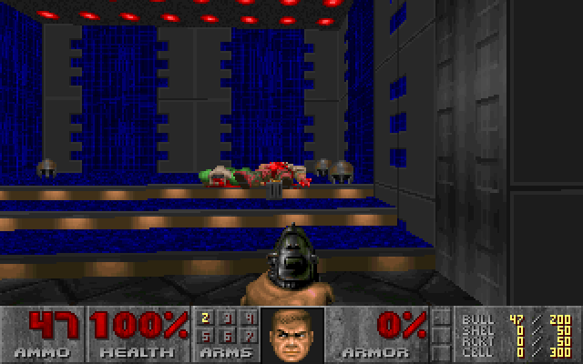
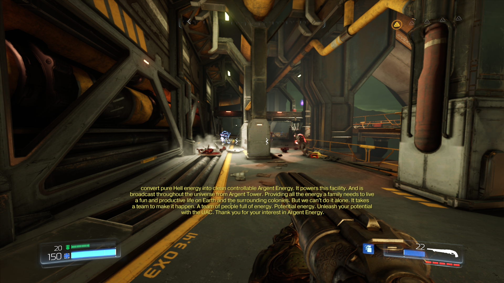
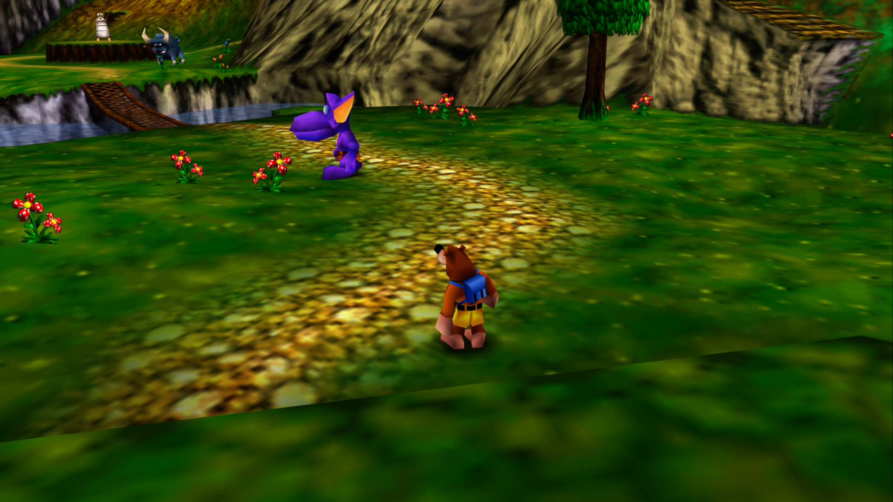

For this week, I played through the first act of Doom, a level in the recent remake of Doom, and played a couple of levels of Banjo Kazooie
As far as I am concerned, Doom is a classic to this day. I think that it is still incredibly playable. I have a lot of personal connection to this game, as some of my first experiences doing hacker-y things were creating custom mods for Doom because I could. It is a fairly basic first person shooter that feels great because of the sense of flow and momentum. You don’t hide behind walls for cover, you run in guns blazing and pick up health packs and ammo as you go. The theme is also really gripping, instead of the dull browns that we see in most modern shooters, it has quite industrial looking environments with enemies that pop out in contrast. All in all, I would recommend it.

To briefly discuss the remake, I think that it is a great modern interpretation of the classic Doom gameplay. It feels fast and fresh, and has a lot of the conveniences of modern games while still retaining that amazing sense of always moving forward. Absolutley worth checking out for fans of the original.

Banjo Kazooie is basically everything I could ever ask for in a game. It gives a huge, interconnected world with nothing to do but explore. It has a simple set of mechanics who's number increases over time. I did not play this game as a child, but picked it up recently in the Rare Replay pack for Xbox One. I absolutely think that everyone should play this game. You can tell how much care went into every little aspect of the game, from specific design of each puzzle, to the dialogue between the characters, to the amazing music that fills each level and adapts based on what part of the level you are in. Definitely a masterpiece.

In my opinion, the answer to why would a video gamer choose one platform over another is all of the above. As someone who has been a video gamer for years, I will say that if I had to rank specs, price, portability, and games, it would look like:
1: Games
2: Price
3: Portability
4: Specs
I will explain my ranking here in backwards order. In my opinion, specs is the least important in my decisions, with one caveat. The only effect that specs have on what I am looking for in a console in this day and age is how hard it is to program for, e.g., how good third party developer support will be. That being said, I feel like in the modern era there are enough standard platforms like Unity that should be compatible on all systems and therefore development difficulty probably will not be as much of a factor. I think that, especially in the modern era, there aren’t really going to be mainstream consoles that are substantially limited by the power of their hardware. Thus, I think we are at a point where specs can be mostly ignored (other than in areas like peripherals or touchscreens).
The importance of portability is probably the most subjective. I have some friends who put more of their gaming time in on handhelds than anything else. As a kid, this was probably true for me too. Having multiple siblings around the same age, we could only really play multiplayer games on our larger consoles, or else two people would just be sitting and watching. If we all played on our handhelds we could do whatever we want. We also could play on them at restaurants waiting for food, or in the car on our way to wherever it is that we would go with our families. However, these days, the time that I have for gaming is mostly all sitting in my room when I have finished my homework, and it feels more relaxing to sit down on the couch with my Xbox instead of staring at the really small screen of my 3ds.
Price is also a personal factor to some extent. How important gaming is in one's life can vary a lot from person to person. For some people, gaming is a part of their career. For others, it may be their favorite hobby, and yet for others it may just be something they do every once in a while to pass time. People also have different levels of economic status. Both of these factors influence how much someone is willing to spend on games - the more important it is to you and the more you can afford it, the more willing you are to spend money on it.
To me, games is above and beyond the most important factor in deciding on what system to choose. I would choose a non-portable, low specced system with a bunch of games that I wanted to play on it in a heartbeat over a system that was better in every way except had no games I liked. Fundamentally, a game system is for playing games. I like that my Xbox has a YouTube app; I've probably gotten more use out of that than I have of any actual game on it. However, I have laptops and a Chromecast and a ton of other random devices that can all play videos if I want. The thing that differentiates the game system is the games. These days, there are a lot of games that are playable across all systems, so what it really boils down to is the amount of exclusive content for a given system.
Naming my favorite console of all time is really a tough call. I have had a lot of different systems over the years, but I think I have to come back to the one that I can recall the most fond memories of. I would say that for me, that console is the Nintendo Gameboy Advance. I had both the original system and the SP version, and played a lot of Gameboy games on my DS with its backwards compatibility feature. I definitely spent a large percent of my younger years playing GBA games, from Pokemon Sapphire to the Super Mario World port. I also played a ridiculous number of shovelware movie tie in games that I still had a great time with - like every game based on the Harry Potter movies that came out during the GBA lifespan. Honestly, I would probably spend any amount of money on a GBA Classic if Nintendo decided to make one. The console had just the right amount of input, with a d-pad, two shoulder buttons, and four face buttons. It was just enough to keep gameplay focused and non-gimmicky without being too limited, where I would argue that its predecessor, the Gameboy Color, was too limited, and its follow up, the DS, was too much of a gimmick (though I enjoyed it at the time still, I think a lot of the games used the touchscreen because it was there, not because it was in any way valuable). My second favorite honestly has to come down to my new Xbox One. I didn’t get it until the end of this summer, but having it in my dorm room has been a game changer. It has become somewhat of a rock for me in this emotionally difficult year; it is nice to have something constant to look forward to coming back to and the end of the week.